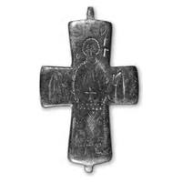
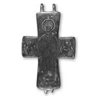

Catalog › CE-0441 · SYR2012-18
Encolpion bivalv de aliaj de cupru, cat. 18, NMIU Kiev
sec. X–XI (901–1100) · loc necunoscut · Muzeul Național de Istorie a Ucrainei (НМИУ), Kiev; colecția „siriană” B. I. și V. N. Hanenko, inv. valva anterioară: в 4626/318 (4076); valva posterioară: в 4626/316 (4074)
double-sided reliquary cross (enkolpion), altul; c. X–XI (901–1100); find spot unknown; kept at Muzeul Național de Istorie a Ucrainei (НМИУ), Kiev; colecția „siriană” B. I. și V. N. Hanenko.




Identificare
- Categorie
- Encolpion bivalv (relicvar)
- Material
- Altul
- Tehnică
- Gravare (incizie)
- Stare
- Întreagă
- Dimensiuni
- Î 72 × L 50 × Gr 6 mm
Iconografie
- Avers
- Sf. Gheorghe
- Descriere avers
- Sfântul mare mucenic Gheorghe în picioare, rugându-se, cu nimb neted completat pe contur cu amprente triunghiulare; mâinile ating două obiecte neclare (cădelniță și toiag (?)). Mânecile, brâul și chenarul tivului sunt decorate cu aceleași amprente; partea de sus a veșmântului hașurată, cu o cruce cu patru brațe (capetele de sus și de jos despicate) incizată la centru; partea de jos cu cruci oblice. Picioarele în lături.
- Revers
- Maica Domnului cu Pruncul
- Descriere revers
- Imagine foarte ștearsă a Maicii Domnului în picioare, cu Pruncul în fața ei; pe brațele laterale, arhangheli în bust; pe capătul de sus inscripție. Imaginea lui Hristos este înscrisă în întregime în conturul Maicii Domnului; nimbul neted al acesteia, conturat cu amprente triunghiulare adânci, este încununat de o mică cruce cu patru brațe; poziția mâinilor neclară. Hristos, cu nimb crucifer și veșmânt lung din care ies picioarele întoarse în lături, abia se distinge. Arhanghelii sunt identificabili după aripi.
- Inscripții
- Față: Ⓐ ГЄO / H P / O Г / C (în juruI capuIui); revers: MH ΘO (sub titIuri)
- Limba
- Greacă
Datare și atribuire
- Datare
- sec. X–XI (901–1100)
- Tipologie
- cruce-relicvar cu Maica Domnului cu Pruncul pe revers și sfânt în picioare pe față
Descoperire
- Context
- Colecție (fără context)
- Coordonate
- 50.4536° N, 30.5164° E
- Precizia locului
- Loc de păstrare (loc de descoperire incert)
Păstrare și referințe
- Colecție
- Muzeul Național de Istorie a Ucrainei (НМИУ), Kiev; colecția „siriană” B. I. și V. N. Hanenko
- Nr. inventar
- valva anterioară: в 4626/318 (4076); valva posterioară: в 4626/316 (4074)
- Bibliografie
- A. A. Пескова, Л. В. Строкова, Христианские древности Византии в «Сирийской коллекции» Б. И. и В. Н. Ханенко, Sankt-Petersburg–Kiev, 2012, 225 p. [Peskova, Strokova 2012], p. 94, cat. nr. 18, ilustrația (fotografie și desen) de la p. 94.
- Figura
- ilustrația la cat. nr. 18
- Planșe
- Peskova, Strokova 2012, p. 94
- Observații
- Cruce-relicvar întreagă, cu brațe drepte ușor evazate; valve masive. În încrucișarea valvei anterioare se vede în relief o cruce oblică (posibil nervuri de rigidizare de la turnare). În interiorul urechilor de sus s-au păstrat fragmente din tija de legătură; urechile de jos parțial rupte. Interior murdar, cu oxizi. Autoarele nu au găsit analogii precise din cauza ștergerii imaginilor. Dimensiuni în sursă (în paranteză, înălțimea cu urechile): 7,2 (8,5)×5,0 cm; 7,3 (8,5)×5,0 cm; grosime 0,45–0,55 cm; 0,45–0,55 cm. Vechiul număr de inventar al Muzeului de Artă Hanenko (1925) este cel din paranteză. Album Hanenko, vol. III (needitat): valva anterioară tabla XLVI, nr. 467; valva posterioară tabla XLVI, nr. 466. Atribuirea autoarelor: Orientul Apropiat, sec. X–XI. Locul descoperirii nu este dat în sursă. Material în sursă: aliaj de cupru. Locul descoperirii nu e cunoscut cu precizie; punctul de pe hartă marchează locul de păstrare (Muzeul Național de Istorie a Ucrainei), nu locul descoperirii. Coordonate: nu sunt date în sursă.
Citare: Corpus Encolpiorum, CE-0441, Encolpion bivalv de aliaj de cupru, cat. 18, NMIU Kiev, https://vitaliejosanu1979-ux.github.io/primul-meu-proiect/piese/SYR2012-18/ (accesat 2026-10-17).